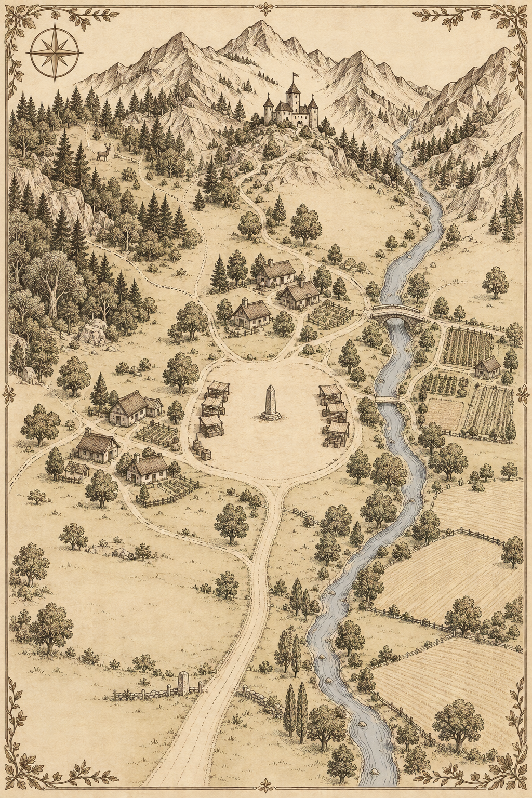

Village mapImages/culture-map.png
About the Culture
Landscape & Livelihood
The village is situated in an inland valley, surrounded by multiple layers of mountains. Water that flows down from the mountains runs along the east side of the village, and the residents farm on the flat land near the stream. The forest provides edible fruits and plants, as well as animals to hunt, so farming, gathering, and hunting sustain the village’s way of life. Although the environment is relatively mild and sunny, abundance is not always guaranteed. A year's life changes depending on the timing of the rain, the amount of water, and when the fruit ripens. Residents value observing and waiting for changes in nature as much as they value the skills of caring for the land.
The houses stand in small clusters on land a little away from the stream. Build the foundation with stones from the surrounding mountains and construct the walls and roof using wood and earth. Close to the house are a small vegetable garden and a space for drying harvests, and the paths people have traveled repeatedly connect the home, the forest, and the farmland to the market. There is a wide open space in the center of the village, and on market days, stalls are set up on both sides. Residents bring grain and fruit, medicinal herbs, meat, and handmade household items here. An open space is a place to exchange goods, share news, discuss tasks to be done together, and mark the beginning and end of the seasons.
The mountains surround the village, but they do not completely sever its connection with the outside world. Along the path that runs through the valley, merchants occasionally come in to bring back hard-to-find items from the village, such as salted seafood, jewelry, and pottery. This path leads to the larger city and the surrounding villages. Residents share the language widely used in their area and know that they are part of a larger society through the objects and news that have come from outside. However, since interactions are not frequent, most of our daily lives are built on relationships with close neighbors.
Belief & Community
An important promise in this community is not to harm one another's livelihoods. Using water, gathering in the forest, and coming and going from the hunting grounds are not matters confined to a single household. If water is drawn excessively from upstream, it affects the farmland downstream, and if all the unripe fruit is picked, the share for those who will visit the forest later is reduced. The help residents talk about includes not only sharing what is lacking but also actions that leave room for others to continue living. That doesn't mean it is a village without conflict. When the harvest is small or the hunt is difficult, conflicts arise over shares and boundaries. Community commitments are necessary even in such moments to live together.
The residents regard nature as a gift from the gods. The existence of God is believed to be revealed in the fact that light enters, water flows, fruit ripens, and people are able to protect one another. Light, water, abundance, and power are the four concepts they repeatedly use to describe the world. Light is the condition that allows life to grow, and water is the driving force that sustains that growth. Abundance refers both to having plenty of food and to a fulfilled state in which life can continue. Strength is the ability to overcome danger and protect family and neighbors. Even a person's name carries the intention of honoring such grace or wishing for it to be part of their life.
Writing & Memory
Reading and writing skills are not evenly distributed among everyone. Only a small number of literate residents are responsible for recording documents and transactions exchanged with the outside village. Alongside this, the village is imbued with a visual system of symbols based on the fundamental elements of light, water, abundance, and power. Even those who cannot read long sentences can recognize the meanings and uses of the patterns they frequently encounter. These patterns indicate places and activities that the community values, and each form reflects how the inhabitants understood its subject.
Patterns are created by overlapping, joining, repeating, or changing the direction of basic elements. The way the elements are placed together indicates the relationship between them. Overlapping reveals coexistence, while the flow connecting one element to another reveals action and its outcome. Repetition can mean a greater scale, and like the arrowhead of force, it can signify multiple purposes. Residents read not only the finished shape but also where the lines begin and where they lead. Therefore, even if the same elements are used, if their direction and arrangement differ, they become different concepts.
Stone is a material that leaves patterns for many people to view over a long period of time. Everyday records are kept on materials that can be transferred or altered, but the markers of pathways and shared spaces are engraved on stones available locally. Stone is heavy and difficult to handle, yet it does not easily disappear or change place.
Even as much of the village’s buildings, street stalls, and everyday tools disappear over time, some traces of the stone remain. The stele is broken, its fragments have been displaced from their original place, and the strokes on the surface are worn away, making it incompletely legible. Remaining maps show the spaces as they existed when people lived, while landscapes of ruins reveal how those spaces have changed since. The recurring patterns and the combinational rules between different stones lead us to speculate about a life that is no longer visible. LithoScript’s exhibition is an experience of examining those traces together and reading what this community values and what it sought to leave behind.